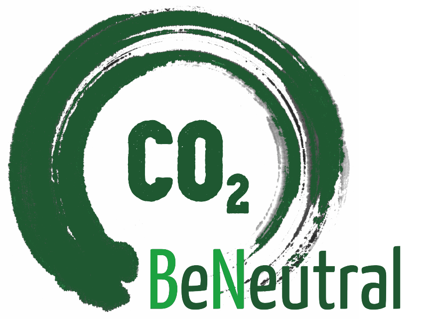
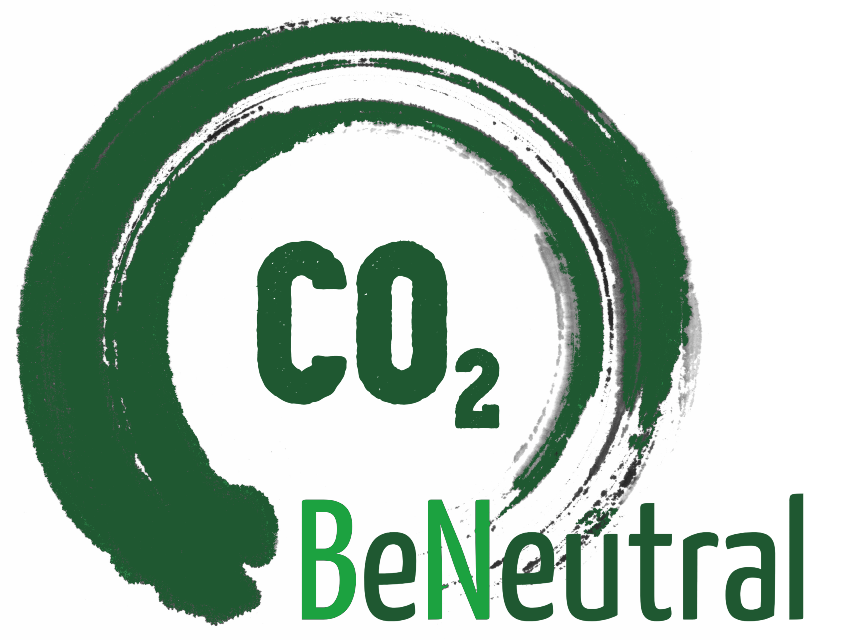
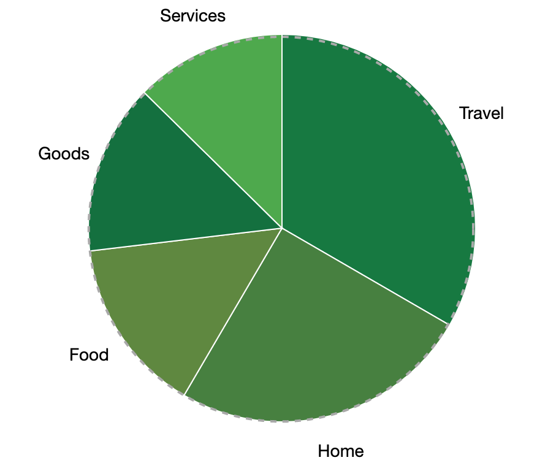

Buildings are significant contributors to the greenhouse gas emissions [1]. They are being produced on-site by burning fuels at homes to heat and cool space or water or for cooking, and off-site as a result of their electricity usage. Many energy efficiency solutions exist and are well known, such as accurate insulation, as well as new technologies emerge, yet people rarely implement them [2]. As much as 80% of energy consumed is wasted [3]. It creates a burden for the planet and for family budgets.
TODO: maybe include water consumption - as a matter of running out of resources rather than global warming.
For an individual, for example in Poland, house heating alone accounts for about 40% of their personal carbon footprint [source] and ?% of an average family spendings/income [source].
On the right: a breakdown of the carbon footprint for an average person in the US [6].
Long term, we believe there is no other way for the planet then every human to balance their emission and absorption, and they need tools to do that.
Trees in particular are interesting because once grown they can be used as biomass to heat houses, replacing coal and other fossil fuels used right now - and the circle closes (without digging under the ground).
With current average emission, it would take about 10 trees [calculations], growing for 10 years to balance what a Pole emits at home for a year. And 20 trees for an average American, should they go for absorption rather then reduction.
NOTE: we are in progress, if you'd like to be one of the first users to test our platform, please let us know by signing up to the list: TODO
Based on your utilities usage, we calculate CO2 emitted by your house, advise how to reduce it, and encourage you to offset the rest by planting trees.
In short, we use data to help your household balance emissions and absorptions to be neutral.
We calculate your CO2 emission based on your utilities usage and location-specific information of how the energy is produced and transmitted.
Learn what contributes to your footprint. Compare options to reduce your emission and to offset what remains emitted. By reducing utilities usage, you'll also pay lower bills. Get to know how much you can save and what upfront costs you'll have to cover. Whenever possible, we complete our knowledge-based estimates with data-based estimates by analyzing previous implementations of a solution in other houses in the network, similar to yours.
Retrofit your house by addressing energy efficiency and shifting sources of energy to renewable, change your habits. Insulate your walls or renovate windows, install new solar panels, replace bulbs and plant trees to capture what you couldn't reduce.
Keep on measuring your utilities usage to see where you are. Keep on reducing your emission until you achieve carbon-neutrality and then maintain it by balancing emission with absorption. Start small, with replacing a few bulbs or setting the thermostat one degree up/down. Over time as you build trust to our estimates you can make bigger improvements like renovating windows or installing solar panels, or even trying that new energy-efficiency technology which you may have never considered before, but ultimately - make well informed decisions and move at your own pace. Track changes in your utilities usage and see effects, both ecological and economical, of your efforts.
Community is our super-power! Share changes you are making and how efficient they are so that we can make even more accurate estimates for others to rely on. We calculate the efficiency of your implementation by computing what 'normal' utility usage meant for your house before the change (relative to the baseline established by other similar and nearby houses) and after the change compare your new 'normal' with the old one.
[1] According to Hannah Ritchie and Max Roser (2017) - "CO₂ and Greenhouse Gas Emissions", published online at OurWorldInData.org:
North America is home to only five percent of the world population but emits nearly 18 percent of CO2
The richest countries of the world are home to half of the world population, and emit 86 percent of CO2 emissions.
Combine that with House contribution to individual carbon footprint in developed countries. Plus developing countries where most people live will be catching on live standards, making it double important to focus right now to mitigate current climate situation and avoid problems in the future.
[2] U.S. Photovoltaic Prices and
Cost Breakdowns
[3] Project Drawdown - Building retrofitting
[4] ?
[5] ?
[6] Berkeley's Cool Climate calculator
[7] calculations, for example based on https://www.arborday.org/calculator/. In particular populus (willows, Energetic Willow, Poplar) as they are fast growing, highly CO2 absorbent and energy efficient.